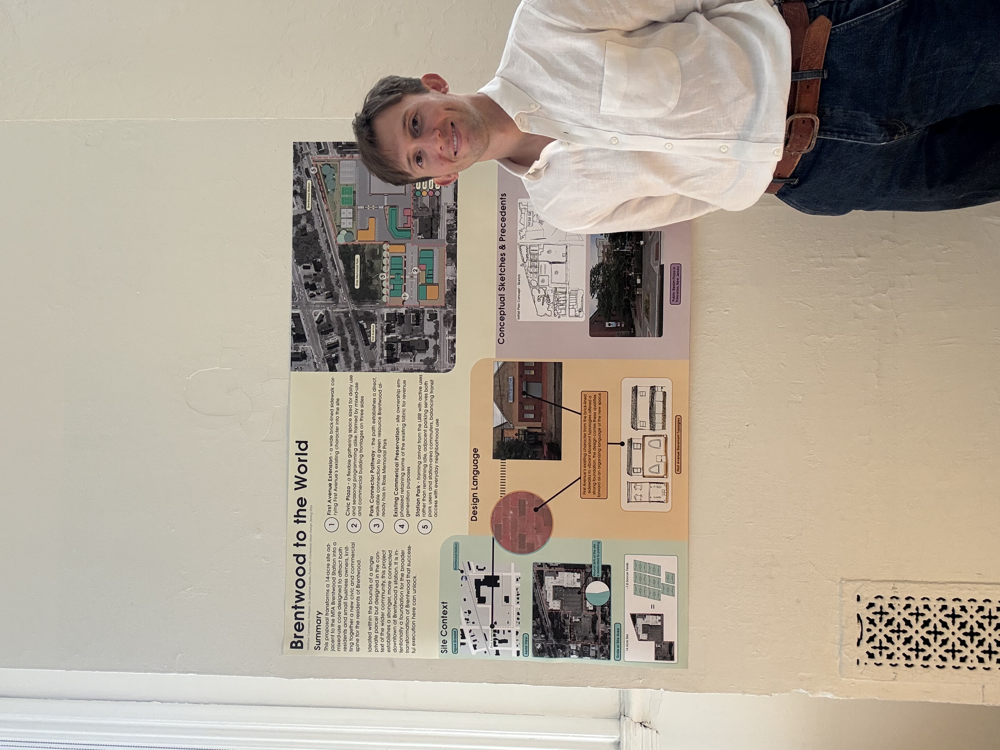
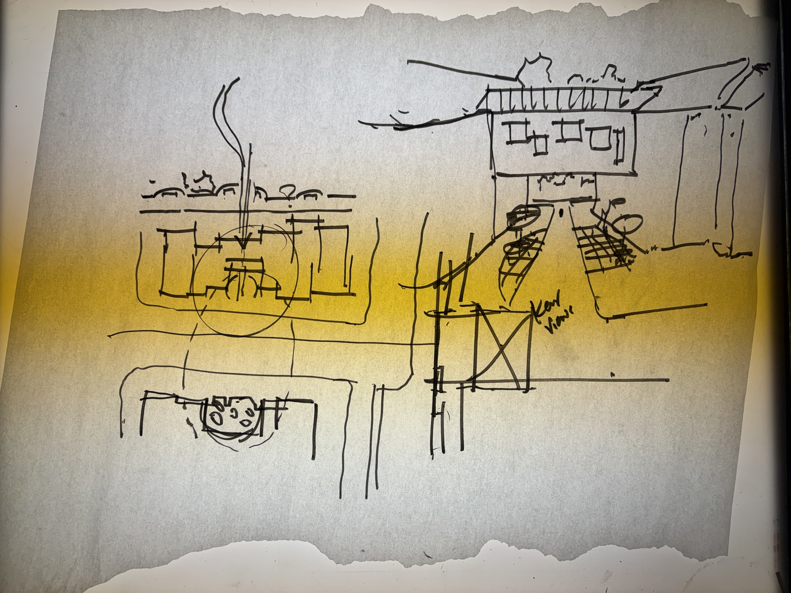
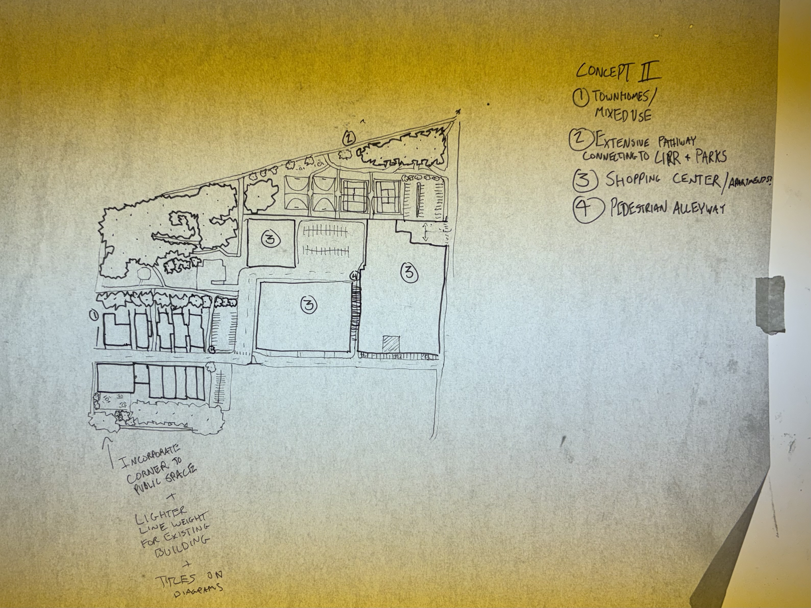
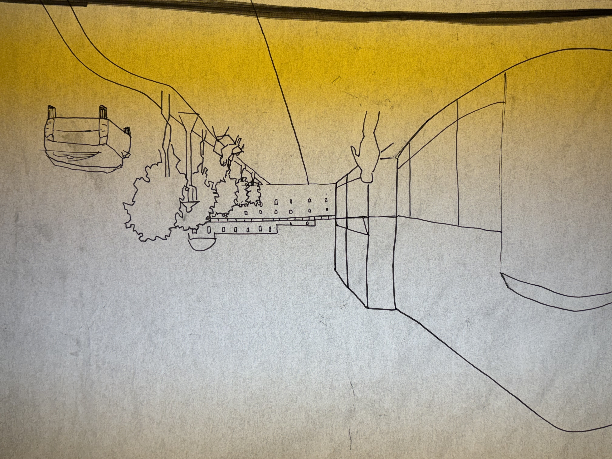
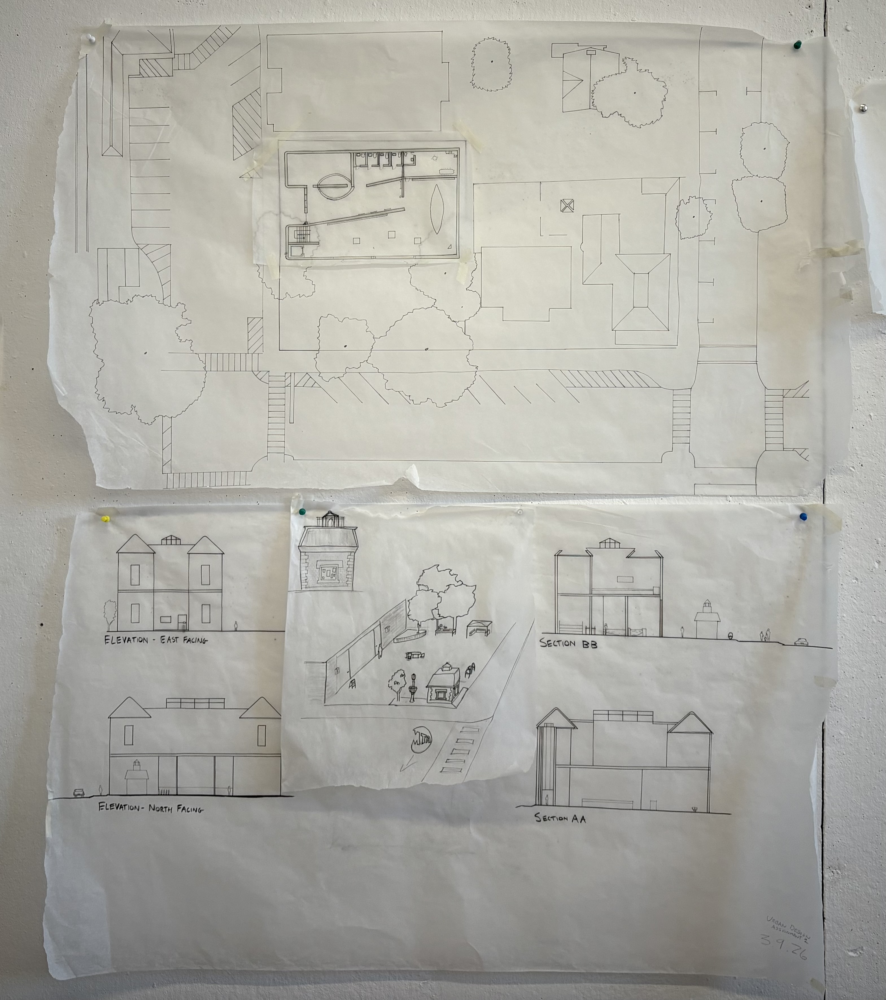
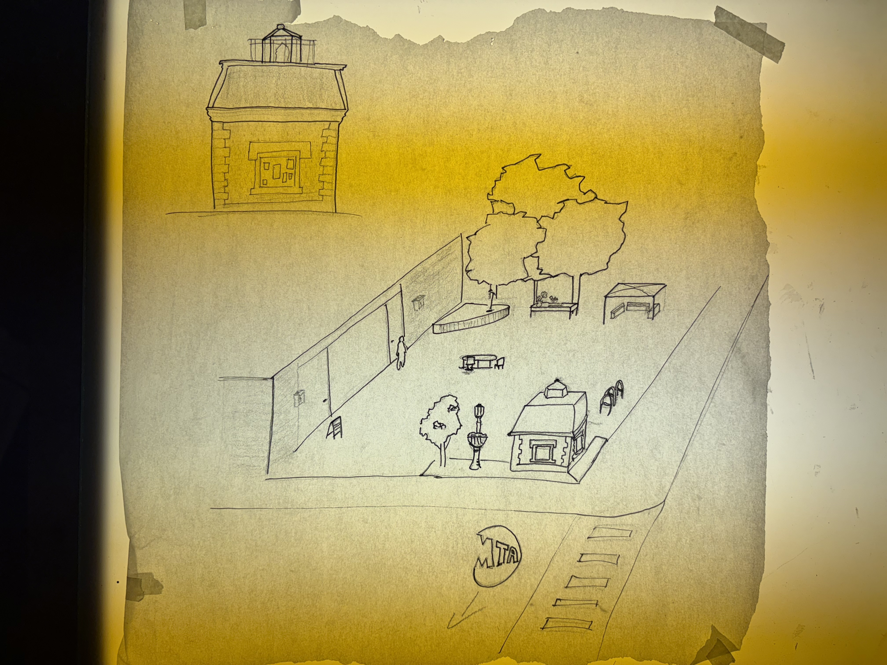
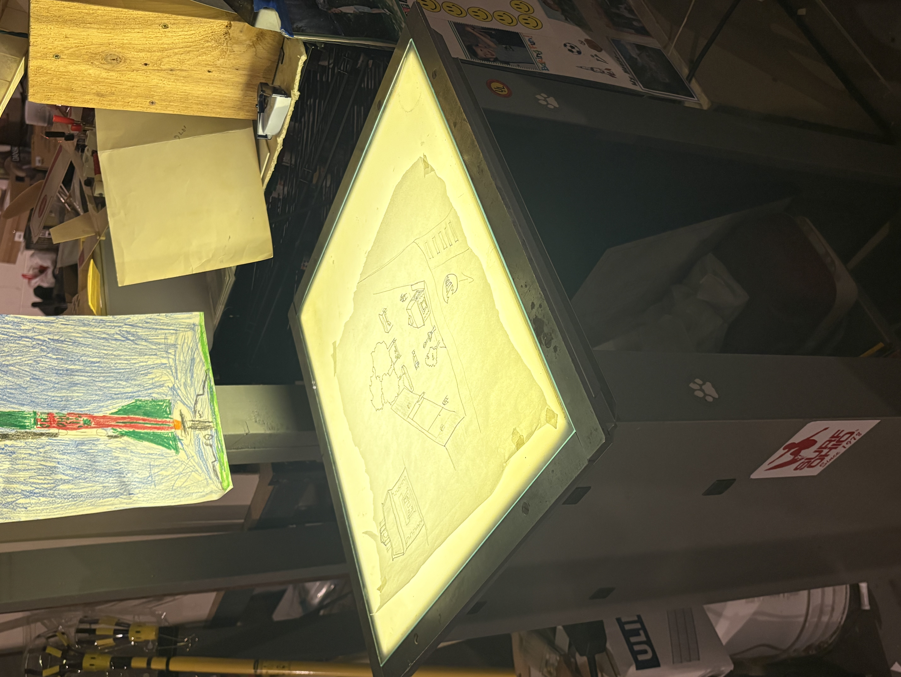
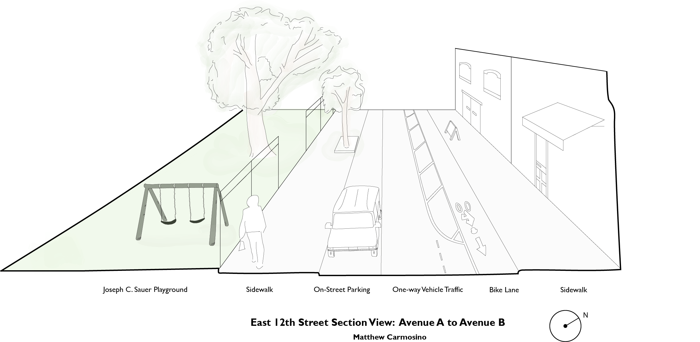

Transit Oriented Development
Contextual Urban Design Studio Showcase Spring '26 ~ tasked with a reimagining 14-acre private parcel beside the MTA Brentwood station in Long Island, New York as a transit-oriented development. Exercised skills in sketching, adobe creative suite, and applying design principles taught throughout the course such as Gehl's Rules, and vernacular/contextual design.






Brentwood to the World — final design board (PDF)
Building Plan
Urban Contextual Design — smaller scale plan of an approx. 10,000 sq ft parcel in downtown Irvington, NY. We were encouraged to create a building of our choice that had some sort of community programming, so I made a museum dedicated to the history along the grand Hudson river, with almost half the parcel dedicated to an open-air plaza with a kiosk (resembling the Hudson-Athens Lighthouse)



Other Drawings
